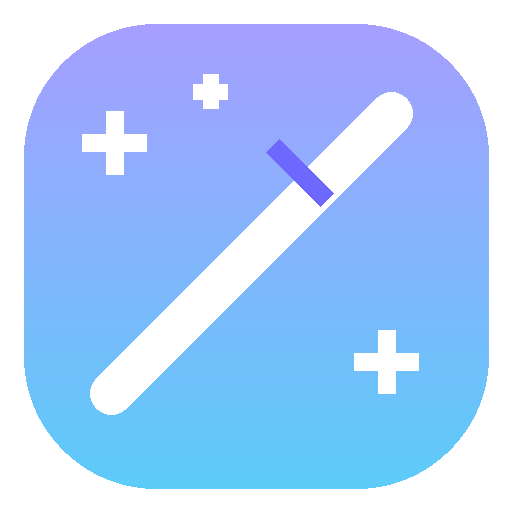

或点击右上方「导入图片」支持 JPG、PNG、BMP、WEBP，最大 50 MB
模型尚未保存到本机。可选择国内下载或国外官方来源手动下载；自动下载始终优先使用国内来源。
正在获取保存位置…
请将下方列出的全部文件直接放入此文件夹，不要再额外嵌套一层目录。
基础版保持轻量 CPU 推理。安装后将下载 PyTorch CUDA 运行时，并自动重启应用以启用 GPU。
首次安装需要预留约 8 GB 可用空间。
正在获取手动安装文件夹…
你可以稍后在“设置”中随时切换。